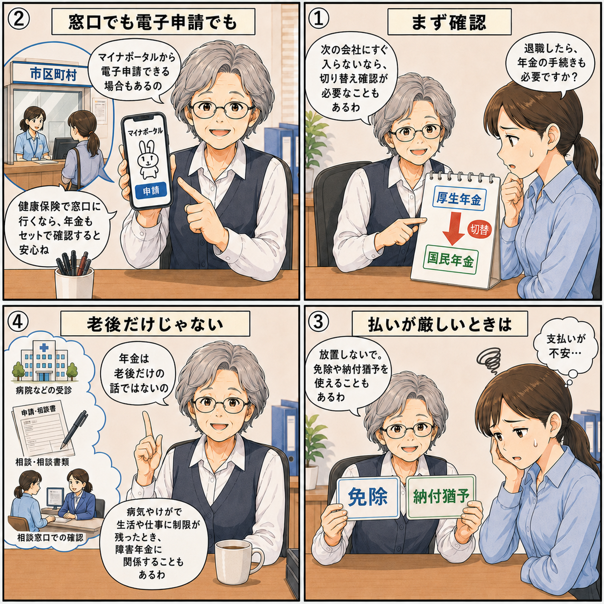

退職後の年金手続き｜厚生年金から国民年金への切り替えと免除・猶予
退職して次の会社にすぐ入らない場合は、健康保険だけでなく、年金の手続きも確認が必要です。 会社員の間は厚生年金に加入していますが、退職後にしばらく会社に入らない場合は、 国民年金への切り替えが必要になることがあります。

先に結論
退職後、次の会社にすぐ入らない場合は、厚生年金から国民年金への切り替えを確認しましょう。
支払いが厳しい場合でも、放置せず、免除や納付猶予の制度を確認することが大切です。
確認すること
- 次の会社にすぐ入るか
- 国民年金への切り替えが必要か
- 保険料の支払いが難しい場合、免除・納付猶予を使えるか
- 健康保険の手続きと一緒に確認できるか
退職後、年金の切り替えが必要になるケース
退職後すぐに次の会社へ入社し、再び厚生年金に加入する場合は、 基本的に次の会社で手続きが進みます。
一方で、次の会社にすぐ入らない場合や、しばらく無職・フリーランス・自営業になる場合は、 国民年金への切り替えを確認しておきましょう。
手続きは市区町村の窓口やマイナポータルで確認
国民年金の加入や、保険料の免除・納付猶予に関する手続きは、 マイナポータルから電子申請できる場合があります。
ただ、退職後は健康保険の切り替えで市区町村の窓口へ行くこともあります。 その場合は、健康保険だけでなく、年金の手続きもセットで確認しておくと安心です。
支払いが厳しいときは放置しない
退職後は収入が減ることがあります。国民年金保険料の支払いが厳しい場合でも、 そのまま放置するのは避けた方がいいです。
国民年金には、保険料の免除制度や納付猶予制度があります。 退職した場合は、失業等による特例免除を利用できることもあります。
年金は老後だけの話ではない
年金というと、老後にもらうものというイメージが強いかもしれません。 しかし、年金は老後だけの話ではありません。
病気やけがで生活や仕事に制限が残ったとき、障害年金に関係することもあります。 そのため、退職後に年金の手続きを放置しないことが大切です。
まとめ
- 次の会社にすぐ入らない場合は、国民年金への切り替えを確認する
- 健康保険の窓口に行くなら、年金も一緒に確認すると安心
- 支払いが厳しい場合は、免除や納付猶予を確認する
- 年金は老後だけでなく、障害年金に関係することもある